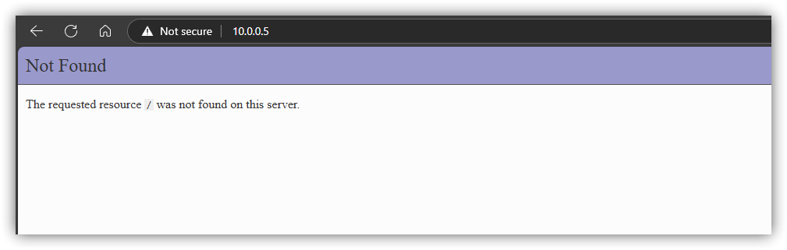
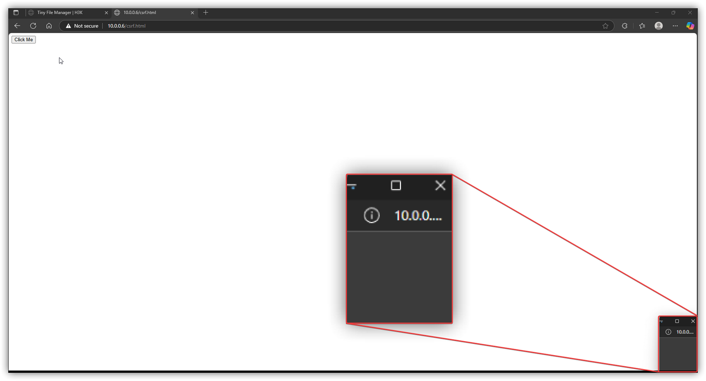

How Forged Requests Can Lead to RCE
Forging Requests
Cross-Site Request Forgery is a vulnerability that takes form in many ways, but the underlying issue is the same. This occurs when there's lacking controls on requests, which means the receiving server cannot tell the difference between tampered and legitimate requests. There's many articles and resources, from OWASP , MITRE , and others that cover CSRF; however, I'll be covering specific CSRF vulnerabilities I discovered in an open-source application, as well as the challenges web browser protections pose when attempting similar exploits.
With that, I recieved written permission that the stated vulnerabilities can be disclosed. Steps have been taken to responsibly disclose the findings to the appropriate parties.
The testing I performed was on Tiny File Manager v2.6, which can be found here and is primarly used as a light-weight server for uploading and sharing files.
Before we jump into bypassing browser protections, lets take a look at a couple of the requests that are vulnerable to CSRF within Tiny File Manager.
Above we have a POST request containing some parameters in the POST body. Highlighted is the "token" parameter which has the CSRF token value omitted.
Now, you can see when the request is processed, and that the filename is changed. This is particularly useful to an attacker because depending on the filename, the web server can process the file differently. The main file "index.php" contains the source code for the application. This means that if you browse to the php resource, the entire source code would not be disclosed and only the intended client-side output would be visible. Any backend code would still work, but would not appear client-side.
Targeting Vulnerable Components
We identified a request that can change filenames, and this is useful since "index.php" contains all the web application credentials. we can immediately change the index.php to a readable format to obtain the username and password for the admin account. However, that would be destructive to the web application. Even if we retreive the credentials, we would be leaving the server in a DoS (Denial of Service) condition.
The above screenshot shows the source code is disclosed when we browse to "index.txt".
Consequently, we no longer have access to the web application.
We'll need to take a more careful approach in developing an exploit. I identified another function within the web application that was vulnerable to CSRF. When attempting to copy files, we have a couple options.
The Tiny File Manager dashboard above has two areas selected, labelled as 1 and 2. Both these buttons allow to copy files; however, label 1 does it in a GET request.We can intercept the request to copy the file with Burp Suite, as we did earlier. As shown in the image, the request is sent in a GET request with no "token" parameter by default. This means if we send this request in a link, the file will automatically be copied. This would require user interaction, and for the user to be authenticated with admin privileges. The default directory "data" in the web server root can have files copied to it instead.
The entire GET payload can be seen here: index.php?p=data©=index.php
We can send the GET request, and by doing so the file is successfully copied to the data directory
Chaining CSRFs
Multiple functions were identified that lacked CSRF protections. Even if the SameSite attribute is set to strict, we could still attack these functions, albeit with more complex payloads and closer attention to sessions via popup windows and the JavaScript focus() usage.
Sticking to an environment that doesn't leverage the SameSite attribute, we need following conditions.
- Send a GET request to copy "index.php"
- Issue a POST request to change the copied "index.php" to "index.txt"
With the help of your favorite GPT, we can throw some code together that will combine above steps. It's important to mention that an html button is required to be clicked initially to send the GET request. Without user interaction, the popup will be blocked. Likewise, if we leverage JavaScript, or any other method (such as an image tag) to send the initial GET request it will not work automatically.

We can send one request, but when we try performing a GET and a POST request, the broswer blocks this. So we need some user interaction.
the leftmost side is the attacker server, containing the malicious HTML code. On the rightside is the authenticated admin session.
Next, we see can see small window is open that redirects to the GET request payload.
Finally, on the left window the website visible is the victim 10.0.0.5 host, containing the renamed index file. This is because the final POST request occured from the HTML file on our attacker host 10.0.0.6. So we no longer reside on the attacker server.
Finally, we can access the hashes within the renamed index.php without destroying the web app.
What About Bypassing the SameSite Attribute?
Some web applications and browsers will make CSRF attacks harder to pull off when issuing POST requests. That's not to say it's not worth it, but it might require some phishing and luck.
Lets use Microsoft Edge, since the above CSRF attack is easily mitigated by it. This is because Edge uses lax by default.
Firstly, how does the SameSite attribute work? Well, there's 3 main flags. When SameSite is set to None, it's kind of self-explanatory, in that there's no restrictions on cookies and where they're sent from. Lax is more lenient, but still blocks POST requests that are cross-origin. Finally, we have the strict flag. This setting blocks most things cross origin.
Now that we have a high-lvel understanding of SameSite, we'll need the following steps to bypass lax.
- Send GET request to copy "index.php"
- Open a new window for user to authenticate
- The user will need to authenticate in this second window
- The initiating window on the attacker server will then need to attempt the final POST request
- Additionally, since the attacker window does not know whether the authentication happens, it either:
- Needs to automatically send the POST request after a specified amount of time or
- Automatically send the request when the focus is switched to that window by the victim (pre-emptive)
That's a lot of moving parts. Functionally, the difference is that there needs to be user authentication in a (maximized) popup window, and that the attackers need to make a judgement when to send the final POST request from the first window.
The above screenshot shows a popup after the initial GET request. We can see the fake "error" message after the button is clicked once. The second time the button the button is clicked, a popup window appears that the target user needs to authenticate to.
The above image now shows if the attacker doesn't wait long enough, or the authentication never happens, that the exploit doesn't work and fails. Since the final POST request redirects to the web application, it no longer has a means to re-attempt the attack until the target user visits the attacker site again.
The PoC code for this attack is quite large, but to stay true to PoC or GTFO philosophy, below is the HTML code to perform the attack.
From Entry Point to Root Shell
Once the admin hash is obtained, it will need to be cracked. This hash is bcrypt , which is a bit of a pain to crack. We can verify this by either running the hash through the tool "hashid" or by reading the documentation.
Without getting into the basics of using hashcat, lets skip to the part where we crack it. We're assuming that it can be cracked.
After getting credentials, we can authenticate as admin. At that point, we are able to upload a basic PHP shell with the built-in editor. The php script that is used will take an argument with the parameter "cmd", and contain the command as the value. A useful resource for shells can be found here.
Finally, we are able issue the command whoami; ip a , and see that we are the root user. The internal IPv4 address is different because the server is running in docker.

As a final payload, we can upload a meterpreter elf binary, and run it with our minimal shell for an upgrade.
Final remarks
Depending on the browser that is targeted, plus the password size of the admin user, there's lot of considerations to make for chaining these vulnerabilities together. CSRF protections do exist on Tiny File Manager, but they are not consistently applied. From an assessment perspective, there's room for improvement. This write-up is intended to demonstrate how CSRF vulnerabilities on the Tiny File Manager 2.6 can be chained together, and how other attack paths can lead to worst-case scenarios.